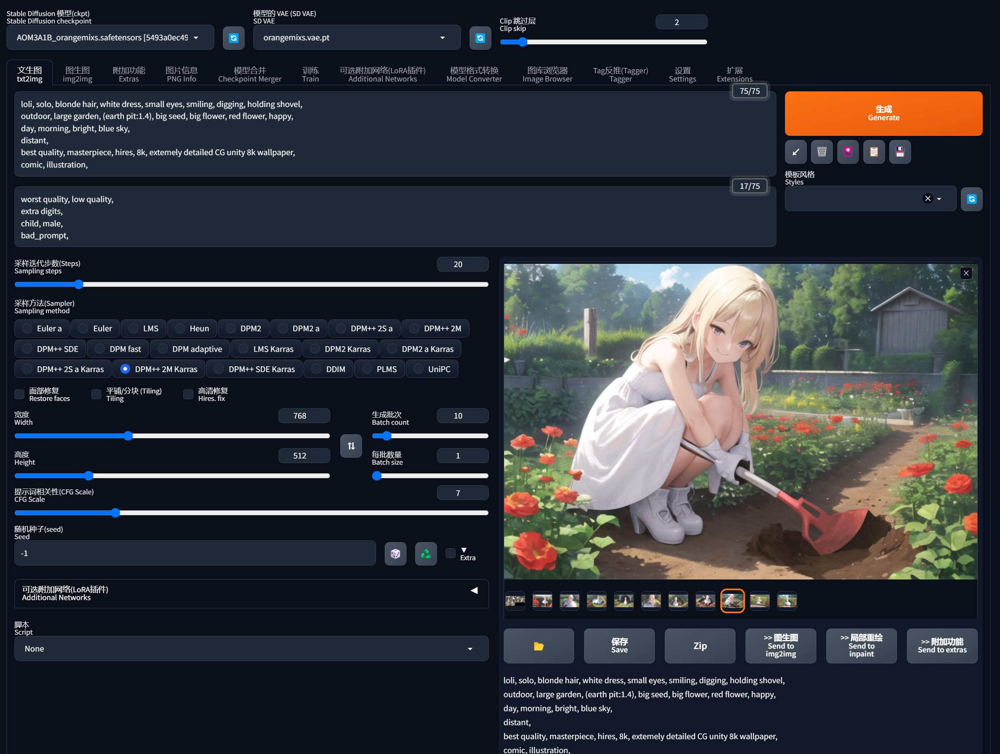

0x00 导航
鉴于 AI 绘画的知识点较多，限于篇幅及便于分类组织，我会以一个系列文章的形式记录：
- 系列 01：《AI 绘画原理与工具》
- 系列 02：《AI 绘画模型扫盲》
- 系列 03：《AI 绘画模型推荐》
- 系列 04：《文生图：不会念咒的炼丹师不是一个好画家》
- 系列 05：《图生图：突破次元圈限制》
- 系列 06：《高清修复：轻松拥有 24K 钛合金画质》
- 系列 07：《提示词进阶：渐变|交替|混合》
- 系列 08：《LoRA 专题：五大应用场景》
- 系列 09：《LoRA 训练：不会炼丹的魔法师不是一个好画家》
- 系列 10：《ControlNet: 姿态控制》
- 系列 11：《ControlNet 进阶：打造炫酷的艺术字和二维码》
- 系列 12：《AI 动画初探：整个宇宙为你而闪烁》
你当前正在阅读的是系列 04《文生图：不会念咒的炼丹师不是一个好画家》
0x10 魔法？咒语？
你绝对不曾想到，有生之年竟然能迎来这么一个奇迹时代： 画画竟然还能用魔法，岂不是只要会念咒、人人都是魔法师 ？！
AI 绘画 和 魔法念咒 究竟有什么不可告人的秘密 ？
经过系列前面的一些科普和别人的耳濡目染下，你应该知道， AI 作图的过程中有一个必不可少的环节，就是向 AI 输入用于描述画面的提示词（Prompt）。
但大部分 AI 绘制作品的提示词是用英文书写的，很长很乱，而且穿插着各种奇怪的数字符号，就像是高深莫测的咒语一样，因此大家形象的把写提示词的这个过程叫做 “念咒”，而我们就像那些魔法师一样要通过 “吟唱咒语” 来变出我们想要的结果。
而在 AI 绘画盛行的今天，“怎么念咒” 已经慢慢形成了一门值得深入探讨的学问了。
那么，你想学念咒吗？
0x20 初识提示词
在 SD 里面，最基本的出图功能，就是 “文生图”， 而这里 “文”，指的提示词（Prompt）了。
Prompt 是指用户输入的文本或图像信息，目的是指导模型根据一些特定需求生成艺术作品。
Prompt 是什么？
在计算机科学和人工智能领域，Prompt 通常指的是一个请求或指令，用于引导一个程序或 AI 模型进行某种操作或生成某种响应。或者说 Prompt 是一种引导 AI 模型生成预期输出的工具。
在自然语言处理（NLP）和机器学习中，Prompt 通常指的是输入到模型的文本，用于引导模型生成预期的输出。例如，在聊天机器人或对话 AI 中，用户输入的问题就是一个 Prompt，AI 模型会根据这个 Prompt 生成一个回答。
在 SD 等绘画模型中，Prompt 也是用来引导模型的输入的。例如，你可以给 SD 一个 Prompt，如「一个形状像鳄鱼的吉他」，然后 SD 会生成一个相应的图像。
简单来说，Prompt 是用来告诉 AI “我要画什么、画成什么样” 的一种沟通语言。
提示词包括的内容是非常广泛的，它可能包括作品主题、画风、人物形象特点、以及一些更抽象的修饰性要素等等。
譬如以我绘制的这个刻晴为例，它的提示词足足有十几行那么长，乍一眼看上去就是在劝退：
looking at viewer, solo,
pantyhose, gloves, detached sleeves, dress, jewelry, large breasts, earrings, black pantyhose, black gloves, purple dress, skirt,
frills, bare shoulders,
hair bun, twintails, long hair, hair ornament, cone hair bun, bangs, braid, purple hair,
purple eyes, diamond-shaped pupils,
outdoors,
(Realistic painting style:1.0), masterpiece, best quality, absurdres,
<lora:keqing_lion_optimizer_dim64_loraModel_5e-3noise_token1_4-3-2023:1.1>, keqing (genshin impact), keqing (piercing thunderbolt) (genshin impact), 但其实我稍微对提示词的构成分一下类、再加上中文含义，你就知道它们在向 AI 传递什么意思了：
| 分类 | Prompt/提示词 |
|---|---|
| 人物形象 | looking at viewer(正视观众), solo(单独) |
| 服饰特点 | pantyhose(连裤袜), gloves(手套), detached sleeves(独立袖子), dress(连衣裙), jewelry(珠宝), large breasts(大胸部), earrings(耳环), black gloves(黑手套), black pantyhose(黑色连裤袜), purple dress(紫色连衣裙), skirt(裙子) |
| 修饰性元素 | frills(褶边), bare shoulders(裸肩) |
| 发型/发色/头饰 | hair bun(发髻), twintails(双马尾), long hair(长发), hair ornament(发饰), cone hair bun(锥形发髻), bangs(刘海), braid(辫子), purple hair(紫发), |
| 眼睛/颜色 | purple eyes(紫眼), diamond-shaped pupils(菱形瞳孔) |
| 场景内容 | outdoors(户外) |
| 画面质量 | (Realistic painting style:1.0)(逼真的绘画风格), masterpiece(杰作), best quality(最高质量), absurdres(超高分辨率) |
| LoRA | <lora:keqing_lion_optimizer_dim64_loraModel_5e-3noise_token1_4-3-2023:1.1>(刻晴), keqing (genshin impact)(触发词), keqing (piercing thunderbolt) (genshin impact)(触发词) |
是不是瞬间觉得一目了然、很简单了？
当然，写提示词不是一蹴而就的，是需要耐心慢慢细调的。
但其实关于画质、风格、反向提示词等，在很多情况下都是固定的，所以你最后需要控制的提示词并不会很多。
虽说提示词并非越多越好，但很多时候写多点比少写点出来的效果肯定要更好，AI 可以更精确地知道你的真实需求究竟是什么。
0x30 怎么写提示词
写提示词的过程是非常自由的，无论你写什么 AI 都可以给你画。
在 SD 中，文生图 和 图生图 都可以找到这么两个输入提示词的文本框：
- 上面是正向的提示词： 用来告诉 AI 你想画什么
- 下面是反向的提示词： 用来告诉 AI 你不想画什么
不过书写提示词的时候需要遵守一些规则：
0x31 规则 1：只接受英文
由于不是翻译用的 AI，只能理解很少的中文词汇，你可以认为在生成高质量画面的时候，中文词汇约等于 0。
因此当你不知道该如何表达的时候，就用自然的语言去把你想要画的东西一件件的说出来就好了、把你想要的画面描述清楚之后，再用翻译软件翻译成英文。
例如我描述了这样的一个画面：
一个小女生在大大的花园里挖呀挖呀挖，种大大的种子开大大的花
A little girl is digging and digging in a big garden, planting big seeds and blooming big flowers翻译成英文句子后直接出图，可以得到一幅拿着花盆挖地的画面：
注意用同样的句子再多画几次，产出的东西都不一样，因为 AI 画的画，在没有添加任何约束的情况下，随机性是极大的，从概率上来讲重复率可能只有几十亿分之一，所以有人比喻这个过程就是在 “抽卡” ，想出好的图片，得看脸。
通俗来说，其实画出不一样的东西是因为 AI 并不能很好地 get 到我的意思。
比如我脑海中的画面是花园里全是坑，AI 并没有从 “挖” 的动作关联到 “坑” 的结果，因为句子中缺乏了这个场景的描述。另外这段描述里，“挖” 和 “种” 是矛盾的动作，AI 不知道优先呈现哪个画面，所以就只能猜我的意思随便出图。
0x32 规则 2： 描述词组化
对 AI 而言，相比于 「一个小女生在大大的花园里」 这种短句，更容易听懂 小女生、大花园 或 （女生，年幼），（花园, 大的） 这种分解词组。
而 “挖” 和 “种” 这种矛盾的动作，我们则可以不希望出现的动作删除或放在反向提示词中，突出我们更想描绘的画面，于是这段描述可以修改为：
A little girl,
digging,
large garden, too many pit,
big seed, big flower注意提示词之间要用英文逗号分隔，可以换行让你读起来更清晰，但换行也要带英文逗号分隔。
0x33 规则 3： 同义词转换
很多时候自然语言都可以用不同的词组表示同一个意思，例如一个女孩，可以时 A girl 也可以是 1girl，对于人来说是没有差别的。
但是 AI 不一样，它会认为 1girl 更准确。 同理，比起 A little girl， 在 AI 看来 loli, solo 会更贴切，导致这种情况和模型训练时的采样有关系，你可以认为这些同义词是 AI 字典里面已经有的词组。
怎么找到 AI 字典里的同义词呢 ？
在 AI 词汇加速器 等平台上就收录了很多在 AI 字典里面的提示词，所以在我们写提示词的时候，如果看到上面有相同意思的单词，可以优先参考或采用。但是使用的时候思路也不要被局限住了，字典没有的也可以写上去，不对再微调就好。

如果嫌麻烦的同学，还可以在 SD-WebUI 的扩展中安装 Tag自动补全 插件，它会自动帮你把不准确表达的意象修改为 AI 字典里面有的东西：
基于以上的 3 个规则，我们把提示词更改为：
loli, solo
digging,
large garden, earth pit,
big seed, big flower再重新生成一下，虽然没有好多少，但是多少已经开始接近意思了：
0x40 提示词分类
为什么还是画不出我脑海中的画面呢？因为
「一个小女生在大大的花园里挖呀挖呀挖，种大大的种子开大大的花」
这只是非常笼统的描述，AI 真正想要的是更具体的一些描述，例如：
- 女孩长什么样： 年龄，服饰穿的什么衣服，体貌是什么身材、发型发色
- 花园里有什么： 种子，花，土坑
- 什么动作： 站着挖 还是 蹲着挖，面向我们 还是 背对我们
- 用什么挖： 手 还是 铲子
- 什么样的铲子： 小铲子 还是 大铲子
- 什么时间： 早上，中午，晚上
提示词越多越具体， AI 就越理解你在描绘一幅什么样的画面。
甚至可以加入一些抽象性的形容词（很开心、很调皮、很累），可以在一定程度上让画面往你想要的感觉倾斜。
但是前面也说过，写提示词并不是一蹴而就的，也没有没有所谓的标准答案，基本都是先有一个雏形，再慢慢往各个方向上加提示词，对其做控制、细化、补充、和微调。
那具体要加些什么呢？从个人的实际经验出发，可以把提示词划分为三个大类：
- 内容提示词: 需要根据实际情况调整
- 画面提示词: 同一幅画基本是固定的，完全可以抄作业
- 特殊触发词: 某些关键的特殊元素可以通过若干个触发词直接呈现在画面上
特殊触发词的一个典型应用就是 LoRA 模型，这一节先跳过，详细可以在本系列的《图生图：突破次元圈限制》中看到 LoRA 的初步应用，在《LoRA 专题：五大应用场景》学习到完整的实用技巧
实际操作时可以把这些作为 checklist 模板，画画时就可以往上面套、对号入座，看看哪些元素缺失或需要调整，基本就八九不离十了。
但不一定每一种分类都能用上，只是一个思路和方向，需要根据实际作画的内容调整。
0x41 内容提示词
| 人物及主体特征 | 提示词(示例) |
|---|---|
| 服饰穿搭 | white dress(白色连衣裙) |
| 发型发色 | blonde hair(金发) |
| 五官特点 | small eyes(小眼睛), big mouth(大嘴巴) |
| 面部表情 | smiling(微笑) |
| 肢体动作 | stretching arms(伸展双臂) |
| 场景特征 | 提示词(示例) |
|---|---|
| 室内/外 | indoor(室内), outdoor(室外) |
| 大场景 | forest(森林), city(城市), street(街道) |
| 小细节 | tree(树), bush(灌木), white flower(白色花朵) |
| 氛围 | happy(快乐), romantic(浪漫) |
| 环境光照 | 提示词(示例) |
|---|---|
| 白天黑夜 | day(白天), night(夜晚) |
| 特定时段 | morning(早晨), sunset(日落) |
| 光环境 | sunlight(阳光), bright(明亮), dark(黑暗) |
| 天空 | blue sky(蓝天), starry sky(星空) |
| 画面视角 | 提示词(示例) |
|---|---|
| 距离 | close-up(近景/特写), distant(远景) |
| 人物比例 | full body(全身), upper body(上半身) |
| 观察视角 | from above(俯视角度), view of back(背面视角) |
| 镜头类型 | wide angle(广角), Sony(索尼) |
0x42 画面提示词
| 画质 | 提示词(示例) |
|---|---|
| 通用高画质 | best quality(最佳质量), ultra-detailed(超细节), masterpiece(杰作), hires(高清), 8k(8K 分辨率) |
| 特定高分辨率 | extemely detailed CG unity 8k wallpaper(超精细的 8k Unity 游戏 CG 壁纸), unreal engine rendered(虚幻引擎渲染) |
| 画风 | 提示词(示例) |
|---|---|
| 插画风 | illustration(插图), painting(绘画), paintbrush(画笔) |
| 二次元 | anime(动漫), comic(漫画), game CG(游戏 CG) |
| 写实系 | Realistic painting style(逼真的绘画风格), realistic(写实), photorealistic(照片写实)，photograph(照片) |
写实系需要搭配真实系的大模型才能体现出效果，用二次元的大模型去画写实系是基本不可能的，在本系列的《AI 绘画模型扫盲》中也解释过，因为这时候 AI 的世界只有二次元，它没见过真人，不知道怎么画
这样分类后有一个好处，就是你的提示词框架会变得很清晰，当你想修改某个细节的时候，只需要精确定位到某个词组然后微调，画面的内容就会就会针对这一项产生变化，不需要全部重写。
现在就前面的案例重新做一下提示词：
loli, solo, blonde hair, white dress, small eyes, smiling, digging, holding shovel,
outdoor, large garden, earth pit, big seed, big flower, red flower, happy,
day, morning, bright, blue sky,
distant,
best quality, masterpiece, hires, 8k, extemely detailed CG unity 8k wallpaper,
comic, illustration, 重新生成一下，虽然和我脑海中的画面还是有差距，但是画面的质感和细节感已经开始丰满起来了：
0x50 提示词权重
画到这里，其实不难发现，我一开始想要的 “坑” 并没有画出来，这又是为什么呢？
因为我们输入了太多元素给 AI 画，它可能不知道你最想要的是什么，就先跑去画了其他东西。
如果我特别特别想要挖 “坑”，那么就需要把 “坑” 的提示词权重提上来，让 AI 优先画出来。
加权重的方法有几种：
- 套括号
- 英文小括号
(tag): 每套一层权重x1.1倍 - 英文大括号
{tag}: 每套一层权重x1.05倍 - 英文中括号
[tag]: 每套一层权重x0.8倍（减权重）
- 英文小括号
- 套括号 + 权重数字
- 英文小括号
(tag:N): 直接指定权重xN倍
- 英文小括号
例如：
(earth pit): 权重为x1.1(((earth pit))(): 权重为x1.1 x1.1 x1.1 = x1.331{earth pit}: 权重为x1.05[earth pit]: 权重为x0.8(earth pit:1.2): 权重为x1.2(earth pit:0.5): 权重为x0.5
当你觉得这个画面里，你告诉了 AI 的但它却没有画出来时，就可以借助这些方法来强调这些元素。
加数字的方式明显更准确，而加括号在进行微调的时候就更方便。
但是权重的时候也要注意一件事情，就是尽量避免个别字条的权重太高，在我的经验里，安全范围在 ±0.5 左右。
当你赋予个别字条一个权重为 2 左右、甚至更高的数值时，它就容易扭曲画面的内容（这个时候我们一般需要改换思路，通过更多同类性的字条来协同增强它的效应）。
回到前面的例子，当我提高 earth pit 的权重到 1.4 倍之后，我想要的土坑就出来了 ：

但是我再拉到 1.5 倍的时候，可能太过分了，她就挖个坑把自己埋了：
0x60 偷懒：ChatGPT 生成
有是如果不想手写提示词，是可以通过 ChatGPT 去生成高质量的提示词的。
但是因为 ChatGPT 的训练数据截至到 2021-09 ，所以他并不知道 stable-diffusion 是什么。幸运的是他知道「文生图 text-to-image」和「DALL-E」模型，因此可以利用它的这块知识帮我们写提示词。
技巧是对它做一些内容方向和画风的引导，细节让它自由发挥，例如我还是让它生成：
ChatGPT 给我返回了一组提示词：
Little girl, bright red dress, wide-brimmed sun hat, dirt-streaked cheeks, determined expression,
large garden, lush greenery, vibrant flowers, towering trees, sun-dappled light, hand-held shovel,
digging energetically, large seed, mysterious and promising, dream of giant blossoms, 2D style,
anime-inspired, high-definition clarity, vivid colors, detailed textures, soft shadows, dynamic composition看看出图效果：
因为让它自由发挥细节的地方，所以前面一些期望的元素是有所欠缺的，这种可以手工补上就好了。
但是它的优点也是很明显的 —— 出图效果很稳定。
在不固定随机种子的情况下，几乎很少画歪的，而且女孩和场景都长得差不多。说明它在细节上把控的精准度更高，知道哪个提示词可以精准描述控制画面的哪部分内容。
0x70 进阶：提示词的高阶用法
除了前面提到的基础用法之外，提示词还有以下几种高阶的使用方法：
- 渐变，语法为：
[from:to:when] - 交替，语法为：
[tag1|tag2|tag3|...] - 混合，语法为：
tag1|tag2 - 组合，语法为：
tag1 AND tag2 AND tag3 AND ...
出于循序渐进（更多的是篇幅问题）考虑，会在后面的《提示词进阶：渐变|交替|混合》中详细展开，这里先跳过
0x80 反向提示词
反向提示词的写法是和正向提示词一样的，只要是你不想让画面出现的东西，都可以往里面丢。
反向提示词是可以没有的，但一般都会选择加入一些通用的词条，之前江湖不是盛传 AI 不会画手吗：
有时怎么画都画歪的情况下，加入反向提示词去限制异常情况的出现、可能会有奇效。
例如这套反向提示词，你几乎可以用在任何场景：
NSFW, (tranny:1.331),
(worst quality:2), (low quality:2), (normal quality:2), lowres, normal quality, lowers, blurry,
((monochrome)), ((grayscale)),
skin spots, acnes, skin blemishes, age spot, (ugly:1.331),
(duplicate:1.331), (morbid:l.2l), (mutilated:l.2l), mutated hands, (poorly drawn hands:1.5), (bad anatomy:l.2l), (bad proportions:1.331), extra limbs, (disfigured:1.331), (missing arms:1.331), (extra legs:1.331), (fused fingers:1.61051), (too many fingers:1.61051), extra digits, (((extra arms and legs))), (unclear eyes:1.331), bad hands, missing fingers,
bad prompt,这里也通过分类解释一下这些反向提示词的含义，主要是避免多手多脚、畸形肢体等多种异常场景：
| 分类 | 提示词（示例） |
|---|---|
| 不适宜内容 | NSFW(不适合在工作场所查看的内容，如黄暴恐等), (tranny:1.331)(变性人), |
| 图片质量 | (worst quality:2)(最差质量), (low quality:2)(低质量), (normal quality:2)(正常质量), lowres(低分辨率), normal quality(正常质量), lowers(下降), blurry(模糊), |
| 颜色/滤镜 | ((monochrome))(单色), ((grayscale))(灰度), |
| 肤质/皮肤异常 | skin spots(皮肤斑点), acnes(痤疮), skin blemishes(皮肤瑕疵), age spot(老年斑), (ugly:1.331)(丑陋度), |
| 身体形态异常 | (duplicate:1.331)(重复), (morbid:l.2l)(病态), (mutilated:l.2l)(残缺), mutated hands(变异的手), (poorly drawn hands:1.5)(手画得不好), (bad anatomy:l.2l)(解剖结构不佳), (bad proportions:1.331)(比例不当), extra limbs(额外的肢体), (disfigured:1.331)(畸形), (missing arms:1.331)(缺少手臂), (extra legs:1.331)(额外的腿), (fused fingers:1.61051)(合并的手指), (too many fingers:1.61051)(手指过多), extra digits(额外的手指),(((extra arms and legs)))(额外的手臂和腿), (unclear eyes:1.331)(眼睛不清晰), bad hands(手部有问题), missing fingers(缺少手指), |
| 其他 | bad prompt(不良提示词), |
部分模型的作者会推荐一些该模型的反向提示词，遇到就照抄就好
0x90 写提示词工具
- AI 词汇加速器
- 标签超市
- AI 绘画提示词生成器
- Tag自动补全 （SD-WebUI 扩展插件）
前面在说同义词的时候、也略微提到过这些辅助写提示词的工具，这些工具对提示词的分类也是有自己的一套标准的，所以我们在用的时候，逐渐形成自己的一套方法论就好，没必要把自己的思路局限死了。
这里我其实比较推荐 AI 词汇加速器，你可以在上面选好提示词、组装后复制到 SD 使用：
其他工具都大同小异，用一下就会了。
这里特别提一下 Tag自动补全 插件的安装，把插件地址 https://gitcode.net/ranting8323/a1111-sd-webui-tagcomplete 复制到「扩展」的「从网址安装」即可：
写提示词时还有其他注意事项：
- 尽量将关键词控制在 75 个以内
- 越关键的词，越往前放
- 相似的同类，放在一起
- 只写必要的关键词
0xA0 出图参数
前面用了很大篇幅去介绍提示词，如果说模型是魔导书、提示词是咒语，那下面的一系列出图参数，就像是魔法师的魔杖一样，控制了这个咒语的具体施放形式。
0xA1 采样迭代步数
还记得我们在第一节中我们看到图像生成的过程（扩散去噪的过程）：

每去噪一次、画面就会闪一次、图像的细节就会变多，而这每一次就是一次迭代。
理论上采样步数越多，最终效果越清晰、细节越具体，但生成图片时间也越长。
但事实上当迭代步数 > 20 之后，后面画面的提升不大（尤其在生成分辨率较低的图片）。
所以推荐使用 20 - 40 步，步数太低还没有完成生成图像、太高效果不明显。
一般情况下，默认使用 20 步，当找到自己心仪的图像需要进一步优化细节时、再提高迭代步数
0xA2 采样方法
采样方法就是一种从一个大的集合（模型）中随机选择一部分样本，然后通过检查这些样本来估计整个集合的特性（生成整个图像）的方法。
这里与我们在数学上所认知的统计方法是一样的。
SD-WebUI 提供的采样方法非常多，不同的采样方法适用于不同的情况，其实不用太过担心选择哪个，因为常用的就那么几个：
| 采样器 | 推荐迭代步数 | 描述 |
|---|---|---|
Euler |
20~30 | 最常见基础的算法，最简单的，也是最快的 |
Euler a |
30~40 | 富有创造力，不同步数可以生产出不同的图片，超过 30~40 步基本就没什么增益了。 |
LMS |
30 | Euler 的延伸算法，相对更稳定一点 |
PLMS |
20~30 | 改进的 LMS |
DDIM |
20 | 收敛快 |
DPM2 |
20~30 | DDIM 的一种改进版，它的速度大约是 DDIM 的两倍。 |
实际使用时选择带
+的优化版本，效果会更好。
最坏的情况也不过是逐个试试找到自己喜欢的，也不是很难是吧？
有些模型作者也会标注适用于哪一个采样方法，那是模型作者自己测试过的，无脑照做就好
0xA3 分辨率（宽高）
这是你最终出图时候的分辨率。
分辨率的设置存在一些隐性限制，模型训练时一般都是选 512x512 或 768x768 的图像，因此：
- 非常小的尺寸（低于
256x256），会让 AI 没地方发挥（画面糊没细节），导致图像质量下降 - 非常高的尺寸（大于
1024x1024），会让 AI 乱发挥（多人/多手/多脚），导致图像质量下降
显存足够大的情况下，推荐把分辨率拉到 1024 左右，但你显存不够，就会报错 OutOfMemoryError：
所以通常的做法都是先使用低分辨率绘制、再使用高清修复来放大。
0xA4 生成批次/每批数量
由于 AI 绘画的不确定性，所以我们常常需要重复抽卡，期待在下一次会出现一张自己喜欢的、再微调细节。
但是重复抽卡的过程过于枯燥乏味，有时甚至抽几十几百次都没抽到可以完美符合心中画面的卡，这个时候就可以把「生成批次」拉高，让 AI 自动重复出图。
实际出图的数量 = 生成批次 * 每批数量
但是「每批数量」不建议调大，非必要情况下保持 1 就好。
因为「每批数量」虽然可以让每批次绘制的图像数量增多，但是这些图像占用的显存是累加的，而「生成批次」每一批之间都会清空显存。
举个例子，譬如一张 2048x2048 的图片需要 1G 显存：
| 方案 | 生成批次 | 每批数量 | 出图数量 | 需要显存 |
|---|---|---|---|---|
| 方案 1 | 36 | 1 | 36 | 1G |
| 方案 2 | 18 | 2 | 36 | 2G |
| 方案 3 | 12 | 3 | 36 | 3G |
| 方案 4 | 9 | 4 | 36 | 4G |
| 方案 5 | 6 | 6 | 36 | 6G |
| 方案 6 | 4 | 9 | 36 | 9G |
| 方案 7 | 3 | 12 | 36 | 12G |
| 方案 8 | 2 | 18 | 36 | 18G |
| 方案 9 | 1 | 36 | 36 | 36G |
显然，在出图数量相同的情况下，「每批数量」越大，需要的显存则越大.
所以如果你的设备不好，使用了错误的方法出图，会非常容易爆显存。
0xA5 提示词相关性（CFG scale）
这个比较好理解，相关性越高，图像上反映出与提示词的匹配程度就越高。
但和提示词的权重一样，一般不会设置太多，合理范围在 7-12 之间是，过高容易让图像色彩过于饱和，反而降低图像质量。
0xA6 随机种子
玩过「我的世界」的同学应该更容易理解随机种子。
在计算机领域中，其实没有真正的随机数（起码到目前为止是这样），只有用「伪随机数生成器」生成一系列的伪随机数。「伪随机」意味着这些数值的生成过程虽然看起来是随机的、但实际上是可以预测和重复的。伪随机数生成器的关键在于，如果你用相同的种子值作为输入，你将得到相同的伪随机数序列。
在 AI 绘画领域中，伪随机的概念也得到了应用：通过伪随机数生成器，引入一些随机性和变化性，以引导扩散过程可以产生随机的噪声，创建更为多样化、有趣且逼真的图像。
然而，如果我们用相同的随机种子作为输入，生成器会产生相同的噪声，从而可以控制在其他输入（模型、Prompt 等）不变的情况下、可以重复生成相同的图像。
因此随机种子使得图像的分享成为可能，例如 C 站 分享的图片一般都会带有图片的生成信息，而随机种子就在其中：
但是随机种子也不是绝对可以复刻图片的，如以下的情况：
- 不同型号的显卡即使参数与模型完全一致，也可能会生成完全不同的图。
10xx和16xx系显卡基本每种型号都会是不同的结果，20xx系和30xx系基本都可以完美复刻图片。但不是10xx和16xx系显卡不适合AI 作画的意思，只是你可能看到别人分享的参数图很棒，但你照搬的时候结果却大不一样。- 某些模型（比如 Anything3.0）因为过于混沌，图像复现性能一样很差。
- 有些扩展也可以实现同 seed 下微调随机种子。
- 「设置」的「采样器参数」中有个选项叫 ENSD（Eta 噪声种子偏移）会改变随机种子。
0xA7 面部修复
想象一下手机的美颜功能，和那差不多。
一般都会勾选上，它会采用一些对抗算法识别人物的面部并进行修复，主要用于真实系模型的人脸修复。
在「设置」的「面部修复」中可以调整修复使用的模型和参数，目前只有 CodeFormer 和 GFPGAN，哪个更好用暂时没定性，包括权重在内都可以自己尝试下。
二次元模型也可以用，在一定程度上可以提升二次元人脸的质量
0xA8 平铺
这是用来生成那种可以无缝贴满整个屏幕的纹理性图片的，如果没有需要千万别勾选。
0xA9 高清修复
理解为图片放大即可。
前面在设置分辨率时也提及过，一般都是先使用低分辨率绘制、再使用高清修复来放大。
在本系列的《高清修复：轻松拥有 24K 钛合金画质》会通过专题形式详细说明，这里先不展开。